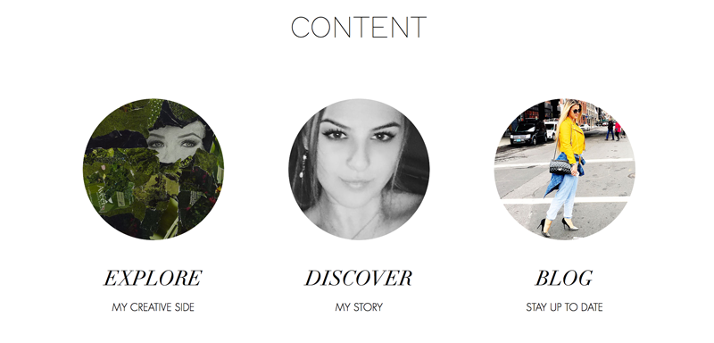
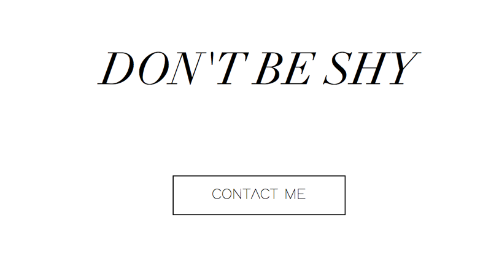
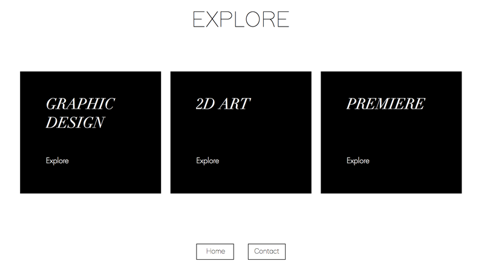
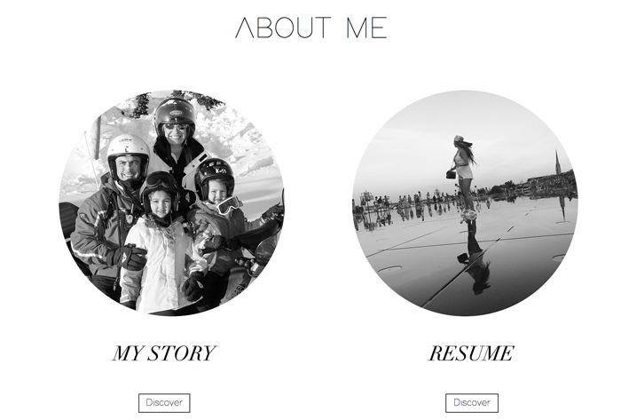

What is the purpose of the website?
The purpose of this website is for users to view my work in my portfolio online.
Who is the intended audience?
My intended audience is future employers. I want to make an online portfolio that is easy to maneauver for them. To show them my capabilities as well as my work.
What tone do you want for this site's written content?
The tone I want for this website is a reflection of my personality. I want the vibe to be clean, classy, and modernistic. The audience should feel welcomed and relaxed with the monochromatic colors chosen and soft music played in the background.
What will be the primary content of your site?
The primary content on this website is to have a scrolling homepage that is sublte but yet impressive. That welcomes and hooks the audience in to dig deeper. The homepage will be, in a way, a summary of what they are about to encounter when they dig deeper. It will have a menu, my logo, a self-taken image, then you scroll down and see the three main sections, and at the end a contact me button.
 What will the secondary content?
The secondary content will be an in-depth exploration of each section shown on the homepage. The sections include, Discover, Explore, and a blog. Discover will give you content on my creative side such as, graphic design, 2D Design, and premiere projects. Explore will give you insight on me, my resume, my story and can direct you to my contact me section. Finally the blog section which will have content of current news.
 